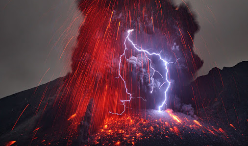

Se muestra informacion sobre la ubicacion del volcan
Se muestran las medidas del volcan
Se muestra la leyenda del volcan
Se muestran la actividad volcanica
Se muestra como se monitorea el volcan
Se muestran las mediadas de prevencion en dos casos
Se muestran los estados que afecta el volcan

El Popocatépetl (en náhuatl: popocatepetl,el cerro que humea.Popoca, humear; tepetl, cerro)es un volcán activo localizado en el centro de México, en los límites territoriales de los estados de Morelos, Puebla y México. Se localiza a unos 72 km al sureste de la Ciudad de México, 43 km de Puebla, 63 km de Cuernavaca, y 53 km de Tlaxcala
Tiene una forma cónica simétrica y está unido por la parte norte con el Iztaccíhuatl mediante un paso montañoso conocido como Paso de Cortés. El volcán tiene glaciares perennes cerca de la boca del cono, en la punta de la montaña. Es el segundo volcán más alto de México, con una altitud máxima de 5500 metros sobre el nivel del mar, sólo después del Citlaltépetl de 5610 msnm.
Hace ya miles de años, cuando el Imperio Azteca estaba en su esplendor y dominaba el Valle de México, como práctica común sometían a los pueblos vecinos, requiriéndoles un tributo obligatorio. Fue entonces cuando el cacique de los Tlaxcaltecas, acérrimos enemigos de los Aztecas, cansado de esta terrible opresión, decidió luchar por la libertad de su pueblo.
El cacique tenía una hija, llamada Iztaccíhuatl, era la princesa más bella y depositó su amor en el joven Popocatépetl, uno de los más apuestos guerreros de su pueblo.
Ambos se profesaban un inmenso amor, por lo que antes de partir a la guerra, Popocatépetl pidió al cacique la mano de la princesa Iztaccíhuatl. El padre accedió gustoso y prometió recibirlo con una gran celebración para darle la mano de su hija si regresaba victorioso de la batalla.
El valiente guerrero aceptó, se preparó para partir y guardó en su corazón la promesa de que la princesa lo esperaría para consumar su amor.
Al poco tiempo, un rival de amores de Popocatépetl, celoso del amor de ambos se profesaban, le dijo a la princesa Iztaccíhuatl que su amado había muerto durante el combate.
Abatida por la tristeza y sin saber que todo era mentira, la princesa murió.
Tiempo después, Popocatépetl regresó victorioso a su pueblo, con la esperanza de ver a su amada. A su llegada, recibió la terrible noticia sobre el fallecimiento de la princesa Iztaccíhuatl.
Entristecido con la noticia, vagó por las calles durante varios días y noches, hasta que decidió hacer algo para honrar su amor y que el recuerdo de la princesa permaneciera en la memoria de los pueblos.
Mandó construir una gran tumba ante el Sol, amontonando 10 cerros para formar una enorme montaña.
Tomó entre sus brazos el cuerpo de su princesa, lo llevó a la cima y lo recostó inerte sobre la gran montaña. El joven guerrero le dio un beso póstumo, tomó una antorcha humeante y se arrodilló frente a su amada, para velar así, su sueño eterno.
Desde aquel entonces permanecen juntos, uno frente a otro. Con el tiempo la nieve cubrió sus cuerpos, convirtiéndose en dos enormes volcanes que seguirán así hasta el final del mundo.
La leyenda añade, que cuando el guerrero Popocatépetl se acuerda de su amada, su corazón que guarda el fuego de la pasión eterna, tiembla y su antorcha echa humo. Por ello hasta hoy en día, el volcán Popocatépetl continúa arrojando fumarolas.
La información publicada en esta sección es el resultado del monitoreo del volcán Popocatépetl que se realiza conjuntamente con la Universidad Nacional Autónoma de México.
El reporte se publica diariamente a las 11 de la mañana; en éste se resume la actividad registrada durante las últimas 24 horas, esto es, de 10 de la mañana del día anterior a 10 de la mañana del día en curso. En caso de que ocurra un evento extraordinario se reportará de forma inmediata.
En las últimas 24 horas, por medio de los registros sísmicos del sistema de monitoreo del volcán Popocatépetl, se identificaron 163 exhalaciones de baja intensidad que solo fueron acompañadas por emisiones de vapor de agua y gases. Se tuvo visibilidad parcial y se observó una muy débil emisión de vapor de agua y gas que los vientos dispersaron al noreste.
Durante la noche se observó ligera incandescencia que aumentaba al momento de algunas de las exhalaciones
Desde hoy por la mañana y hasta el momento de este informe se ha observado una ligera emisión de vapor de agua y gas que los vientos dispersan al noreste
Los demás parámetros de monitoreo permanecen sin cambios importantes.
El CENAPRED exhorta a NO ACERCARSE al volcán y sobre todo al cráter, por el peligro que implica la caída de fragmentos balísticos
La observación y vigilancia de un volcán activo usualmente se lleva a cabo utilizando técnicas de telemedición o telemetría mediante las cuales las señales medidas en las estaciones remotas se trasmiten por radio hacia un puesto central para su registro continuo e inmediata evaluación.
La red del Popocatépetl, actualmente en operación, consta de 12 estaciones remotas y una estación central de adquisición y procesamiento de datos localizada en las instalaciones del CENAPRED. Las estaciones de campo están instaladas en las faldas alrededor del volcán en altitudes entre los 2500 y 4313 m, estando la más cercana a 2 km de distancia del cráter.
Para llevar esta información desde cualquier sitio del volcán hacia el puesto central se implementó una compleja red de enlaces de telemetría a través de radio. Las señales de las estaciones más lejanas ubicadas en el lado este del volcán, se retransmiten a través de varias estaciones repetidoras (IIA e IIB). Para proteger a los equipos del medio ambiente, particularmente severo en las estaciones altas, y también proteger al personal encargado de su operación y mantenimiento, se construyeron casetas especiales de concreto y mampostería.
No humedecer la ceniza a fin de evitar taponamientos en el sistema de alcantarillado
Mantén la calma.
Utiliza medios electrónicos y de comunicación para obtener información confiable que den las autoridades de Protección Civil sobre la caída de ceniza y atiende siempre sus instrucciones.
No realices actividades al aire libre y si es posible no salgas.
Cierra puertas y ventanas y coloca toallas o trapos húmedos en las rendijas.
Si tienes que salir cúbrete con un pañuelo o tapabocas, limpia ojos y garganta con agua pura.
Para los ojos, usa lentes protectores, especialmente si usas lentes de contacto.
Ten a la mano una linterna y pilas.
Cubre tinacos, cisternas y depósitos de agua.
Barre y retira la ceniza de techos, azoteas, patios y calles, deposítalas en bolsas y no permitas que se vaya al drenaje.
Durante la caída de ceniza volcánica, evita que los menores realicen actividades al aire libre.
Mantén a tus mascotas en un lugar techado al igual que sus alimentos. Si tus macotas salen, cepíllalos antes de permitirles la entrada nuevamente.
Mantente alejado de volcanes activos.
Si vives cerca de un volcán activo, prepara un kit de emergencia que incluya gafas de seguridad, una máscara, una linterna y una radio en buen estado que funcione con pilas.
Elabora una ruta de evacuación y ten el depósito de gasolina del coche siempre lleno.
Evacua siguiendo las recomendaciones de las autoridades para no encontrarte lava y barro, así como rocas y escombros que puede arrojar el volcán.
Evita zonas de ríos y regiones bajas.
Antes de abandonar tu casa, ponte una camisa de manga larga y pantalones largos; usa gafas de seguridad o normales, sin lentillas. Ponte una máscara de emergencia o envuélvete la cara con un paño húmedo.
Si no vas a evacuar, cierra puertas y ventanas, y bloquea la chimenea y otros puntos de ventilación para evitar que la ceniza entre en la casa.
Ten en cuenta que la ceniza puede sobrecargar el tejado y puedes necesitar retirarla. Durante la limpieza, lleva elementos de protección
La ceniza puede dañar motores y piezas metálicas, así que evita conducir. Si debes conducir, no superes los 55 kilómetros por hora.
La observación y vigilancia de un volcán activo usualmente se lleva a cabo utilizando técnicas de telemedición o telemetría mediante las cuales las señales medidas en las estaciones remotas se trasmiten por radio hacia un puesto central para su registro continuo e inmediata evaluación.
La red del Popocatépetl, actualmente en operación, consta de 12 estaciones remotas y una estación central de adquisición y procesamiento de datos localizada en las instalaciones del CENAPRED. Las estaciones de campo están instaladas en las faldas alrededor del volcán en altitudes entre los 2500 y 4313 m, estando la más cercana a 2 km de distancia del cráter.
Para llevar esta información desde cualquier sitio del volcán hacia el puesto central se implementó una compleja red de enlaces de telemetría a través de radio. Las señales de las estaciones más lejanas ubicadas en el lado este del volcán, se retransmiten a través de varias estaciones repetidoras (IIA e IIB). Para proteger a los equipos del medio ambiente, particularmente severo en las estaciones altas, y también proteger al personal encargado de su operación y mantenimiento, se construyeron casetas especiales de concreto y mampostería.
Las zonas que serían afectadas por las cenizas y los gases del Popocatépetl dependerían de la dirección de los vientos, principalmente a la altura del cráter. A grandes rasgos, se puede decir que si las emisiones ocurrieran de noviembre a abril, el valle de Puebla sería el afectado. Si la erupción ocurriera de junio a septiembre, la región sur del estado de México y el estado de Morelos serían las regiones de mayores riesgo, aunque también podría sufrir daño el extremo sur del Distrito Federal (México) Sin embargo, conocer todo esto no es suficiente para salvar vidas, ya que aún sabiendo que en una erupción grande que ocurriera por ejemplo en enero, los vientos acarrearían la nube de cenizas y gases hacia el estado de Puebla probablemente no habría tiempo suficiente para organizar una evacuación, debido a que en la actualidad no es posible predecir con suficiente antelación cuándo va a ocurrir el fenómeno. Por esta razón se están haciendo mediciones de las deformaciones del volcán y de su actividad hidrotérmica, y se están realizando registros de la actividad sísmica que proviene de las entrañas del volcán, que permitan poner en marcha planes eficientes y adecuados para salvar a la población de un desastre. Por otra parte, el volumen de hielo que contienen los glaciares del Popocatépetl es mayor de 17 millones de metros cúbicos. Estos glaciares se encuentran en la cara noroeste-norte y si se derritieran súbitamente, la corriente de agua probablemente se canalizaría por la barranca central y la barranca del Ventorrillo. En esta situación, Santiago Xalitzintla , San Nicolás de los Ranchos y San Pedro Benito Juárez podrían ser algunos de los poblados más afectados. En temporada de lluvias es de esperar que el flujo de lodo afecte una mayor superficie debido a que el suelo tiene menor capacidad para absorber o infiltrar agua por encontrarse saturado por las aguas.